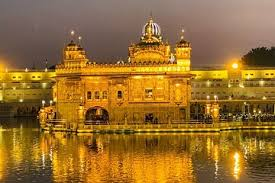
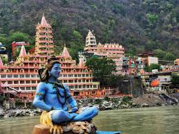

The Ram Mandir in Ayodhya, Uttar Pradesh, is a revered Hindu temple dedicated to Lord Ram, built at the site believed to be his birthplace. After years of legal disputes, its construction began in 2020, attracting millions of devotees each year.
The Golden Temple in Amritsar, Punjab, is the holiest shrine for Sikhs. Officially known as Harmandir Sahib, it is renowned for its stunning golden architecture and peaceful atmosphere. Devotees from around the world visit to offer prayers and experience the temple’s spiritual significance.
Vaishno Devi, located in the Trikuta Mountains of Jammu and Kashmir, is a major Hindu shrine dedicated to Goddess Vaishno Devi. Pilgrims trek 13 kilometers to the temple, seeking the goddess's blessings in a serene and spiritual setting. It is one of the most visited pilgrimage destinations in India.
Bodh Gaya, in Bihar, is where Lord Buddha attained enlightenment under the Bodhi Tree. The Mahabodhi Temple, a UNESCO World Heritage Site, is a major pilgrimage site for Buddhists, offering a peaceful atmosphere for meditation and reflection.

Tirupati, located in Andhra Pradesh, is home to the Venkateswara Temple, one of the most visited pilgrimage sites in India. Dedicated to Lord Vishnu, the temple attracts millions of devotees each year who come to seek blessings and offer prayers.
Rishikesh, in Uttarakhand, is known as the "Yoga Capital of the World." Located on the banks of the Ganges River, it attracts spiritual seekers and adventure lovers. Famous for its ashrams, Ganga Aarti, and activities like rafting, Rishikesh is a hub for meditation, yoga, and outdoor adventures.
